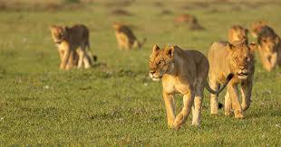
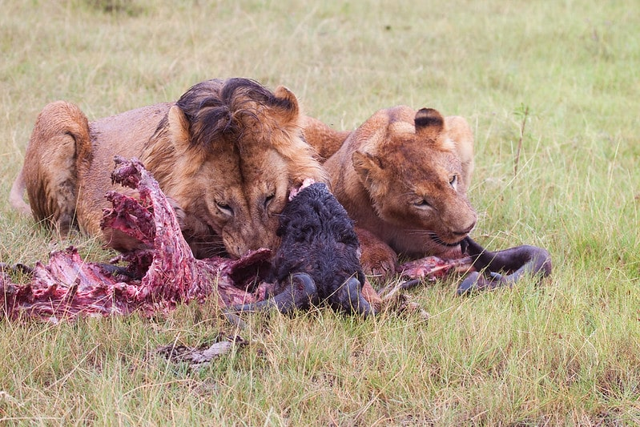

Mode de vie
Page principale
Les lions sont les seuls grands félins réellement sociaux.
Ils vivent en troupes comprenant en moyenne quatre à six lionnes et leurs petits.
Chaque individu passe toutefois beaucoup de temps seul.
La troupe est dirigée par un mâle unique ou par un groupe pouvant aller jusqu'à sept mâles.

Les lions chassent en groupe.
Ils s'approchent sans bruit de leur proie sur plusieurs centaines de mètres.
Lorsqu'ils ne sont plus qu'à quelques mètres de celle-ci, ils l'attaquent,
l'effarouchent et le cernent.
Un lion peut faire des bonds de six mètres et atteindre une vitesse de 60 km/h sur une courte distance.

Les lions communiquent entre eux par de nombreux moyens.
Ce sont des animaux sociaux et de ce fait la communication est plus développée que pour les autres félins.
Leur communication vocale se compose de grognements, grondements, sifflements, gémissements, miaulements, et du célèbre rugissement.
Le rugissement a diverses significations, selon la situation dans laquelle il est employé.
Rugir est employé pour délimiter le territoire, appeler les autres membres du groupe, intimider les rivaux et renforcer le lien « familial » entre les membres du groupe.
Page suivante